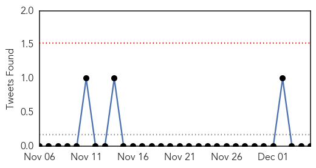
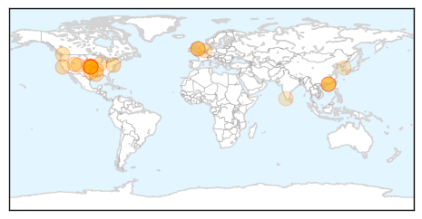
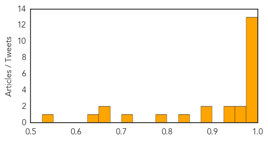
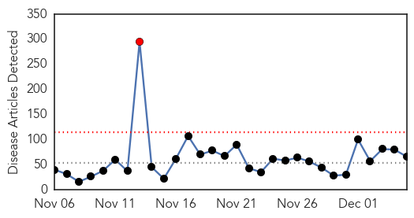

Influenza
30-Day Web Trend
7 alerts, 0 warnings

30-Day Twitter Trend
0 alerts, 0 warnings

Article Locations
Article Confidences
Top Articles:
- 1.000
- Flu Shot May Offer Less Protection This Winter
- 0.999
- This Year's Flu Vaccines Half Effective, Says CDC
- 0.999
- Vaccine may not cover as many flu cases
- 0.996
- Flu vaccines are less effective this season
- 0.996
- Why the Flu Vaccine Can't Protect Against Every Flu Strain
- 0.996
- 2014 flu vaccine not as effective — Virus has mutated
- 0.996
- Vaccination Push Continues As Flu Appears In Kansas
- 0.996
- Why the Flu Vaccine Can't Protect Against Every Flu Strain
- 0.995
- CDC says it is too late to make new flu vaccine for this season
- 0.994
- CDC says it is too late to make new flu vaccine for this season
- 0.992
- Local doctors continue to push flu vaccine despite C.D.C alert
- 0.990
- CDC issues flu warning - Story
- 0.979
- Flu shots are less effective this year
- 0.974
- Larimer flu hospitalizations soar; some classes canceled
- 0.973
- Your Flu Shot Might Not Work This Year (But You Should Still Get One)
- 0.947
- Kane residents urged to get flu shots during Vaccinate Illinois Week
- 0.941
- CDC: Drifting flu virus a worry
- 0.899
- Officials identify strain of bird flu in B.C.
- 0.891
- H5N2 virus confirmed on Fraser Valley farms: CFIA
- 0.843
- Highly Contagious Avian Flu Discovered in Netherlands
- 0.776
- Highly pathogenic strain of bird flu virus observed in Canada - Dumb Out
- 0.723
- UPDATE 1-Canada bird flu virus identified as 'highly pathogenic' strain
- 0.674
- Avian Flu Contained in Core Sites in Kerala
- 0.665
- Canada bird flu virus identified as 'highly pathogenic' strain
- 0.647
- Canada bird flu virus identifiedas 'highly pathogenic' strain, Others news, Health News, AsiaOne YourHealth
- 0.527
- Tests confirm H5N2 avian flu at two B.C. farms; two additional farms infected
Top Tweets:
-
No tweets found for Dec 05, 2014
Unknown
30-Day Web Trend
1 alerts, 0 warnings

30-Day Twitter Trend
1 alerts, 0 warnings

Article Locations


Article Confidences

Top Articles:
- 0.998
- Flu vaccine may not be as effective this year
- 0.995
- Flu vaccine may be less effective this winter
- 0.991
- CDC: Flu Vaccine May be Less Effective This Winter
- 0.990
- Flu cases growing in Pa., thanks to less effective shots for predominant strain
- 0.989
- WCAX.COM Local Vermont News, Weather and Sports-
- 0.985
- Health care professionals say there are simple ways to protect y - KTRE.com
- 0.976
- More flu on the way
- 0.925
- Flu vaccine might be less effective this season, CDC says
- 0.918
- New Mexico: Two additional hantavirus cases reported, one death in McKinley County
- 0.917
- Chicago Tribune
- 0.917
- Chicago Tribune
- 0.917
- Chicago Tribune
- 0.917
- Chicago Tribune
- 0.917
- Chicago Tribune
- 0.917
- Chicago Tribune
- 0.917
- Chicago Tribune
- 0.917
- Chicago Tribune
- 0.917
- Chicago Tribune
- 0.917
- Chicago Tribune
- 0.917
- Chicago Tribune
- 0.917
- Chicago Tribune
- 0.917
- Chicago Tribune
- 0.917
- Chicago Tribune
- 0.917
- Chicago Tribune
- 0.917
- Chicago Tribune
- 0.917
- Chicago Tribune
- 0.917
- Chicago Tribune
- 0.917
- Chicago Tribune
- 0.910
- The world windows to Thailand
- 0.895
- South Sudan Kala-Azar Update - Volume 1, Issue 2 (30 November 2014) - South Sudan
- 0.867
- No more health camps without prior permission: Punjab government
- 0.856
- Birmingham doctors advise still getting flu shot
- 0.807
- Health warning for Lake Whangape
- 0.773
- UND scientists identify Lyme disease in Grand Forks
- 0.746
- Flu vaccine may be less effective this year
- 0.730
- Pakistan: 1,029 mothers, 211 kids contract HIV/Aids
- 0.700
- Monkey Fever Confirmed in Malappuram
- 0.698
- W.Va. health officer leaving year after chemical spill
- 0.675
- NOTICE : Haiti Travel Warning, for U.S. citizens
- 0.672
- Antibiotic-Resistant Superbugs Are Causing Bacterial Infections
- 0.659
- 10 permanently blinded in botched surgeries in India
- 0.659
- There's A Disturbing Reason Behind The Recent Rise In Deadly Infections
- 0.636
- Kenya : Hope as Bill Gates pledges more funds for TB vaccine
- 0.621
- We May Have Reached The 'Apocalyptic Scenario' With Antibiotics
- 0.608
- No medical camps without approval of civil surgeons: Health minister
- 0.603
- Florida gets $1.2M for mental health services
- 0.581
- Obama names Ashton Carter as new defence chief
- 0.581
- French union boss under fire for exorbitant renovations
- 0.581
- France agrees to $60 million fund for Nazi-era deportees
- 0.581
- Paris suburb reels after 'anti-Semitic' robbery, rape
Showing top 50 articles...
Top Tweets:
-
No tweets found for Dec 05, 2014